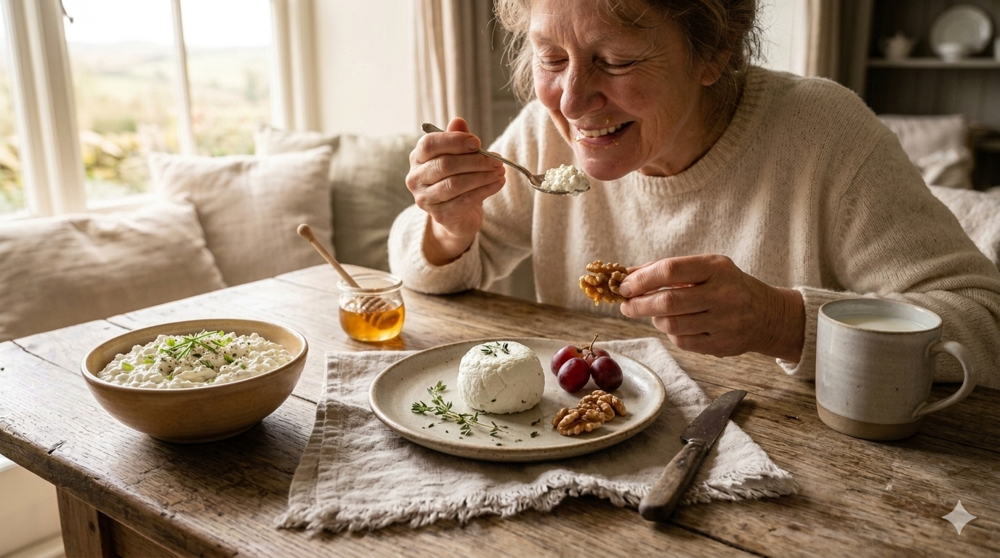
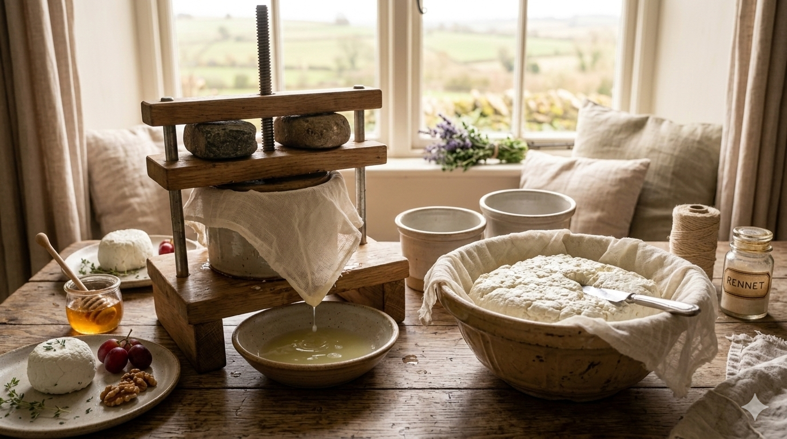

Arya Graciano Timothy
9D/1
Keju adalah makanan padat nutrisi hasil olahan susu (sapi, kambing, atau domba) yang diproduksi melalui proses fermentasi dan koagulasi (pengentalan) kasein menggunakan bakteri atau enzim rennet
Learn more
Keju merupakan salah satu produk bioteknologi yang dibuat melalui proses fermentasi susu dengan bantuan mikroorganisme dan enzim seperti rennet. Dalam proses ini, protein susu mengalami koagulasi sehingga terbentuk dadih yang kemudian dipisahkan dari cairannya dan diolah menjadi keju. Proses tersebut menunjukkan bagaimana ilmu bioteknologi dapat dimanfaatkan untuk mengubah bahan alami menjadi produk pangan yang memiliki nilai gizi tinggi. Melalui blog ini, kami ingin memperkenalkan bagaimana proses pembuatan keju dilakukan serta menjelaskan konsep bioteknologi yang terjadi di dalamnya. Selain itu, kami juga menjelaskan alat, bahan, dan langkah-langkah sederhana dalam pembuatan keju. Dengan adanya informasi ini, diharapkan pembaca dapat memahami bahwa bioteknologi memiliki peran penting dalam kehidupan sehari-hari, khususnya dalam produksi makanan.
1. Tuangkan susu ke dalam panci 2. Siapkan Thermometer dan nyalakan kompor dengan api kecil 3. Panaskan susu sampai suhu menyentuh 60 – 70 derajat selsius. Saat dipanaskan susu harus selalu diaduk menggunakan sendok agar panas dari susu merata 4. Siapkan lemon , pisau , serta talenan. Potong lemon menjadi dua bagian 5. Peras lemon menggunakan alat peras 6. Masukan 4 tetes rennet cair ( 0,2 ml ) dan 5 ml air lemon ke dalam susu yang sudah dipanaskan 7. Aduk susu sebanyak 4 -5 kali untuk memulai proses koagulasi 8. Biarkan susu selama 45 menit – 1 jam agar mendapatkan koagulasi yang baik 9. Setelah 1 jam susu akan membentuk bulir bulir atau gumpalan keju yaitu curd 10. Siapkan kain saringan dan panci untuk menyaring curd dari susu 11. Tuangkan curd dan whey yang ada di dalam panci pertama secara perlahan dan tunggu sampai semua curd dari susu sudah terkumpul didalam kain saring 12. Tambahkan ¼ sendok teh garam dan aduk hingga merata 13. Ikat kain saring dan gantung di tempat yang cukup tinggi untuk mempercepat penyaringan air whey. Proses ini dapat dilakukan selama 2 jam 14. Setelah 2 Jam buka kain saringan , dan didalam kain saringan tersebut terdapat keju yang sudah jadi . Keju yang sudah jadi dapat di tempatkan di dalam toples untuk disimpan

9D/1